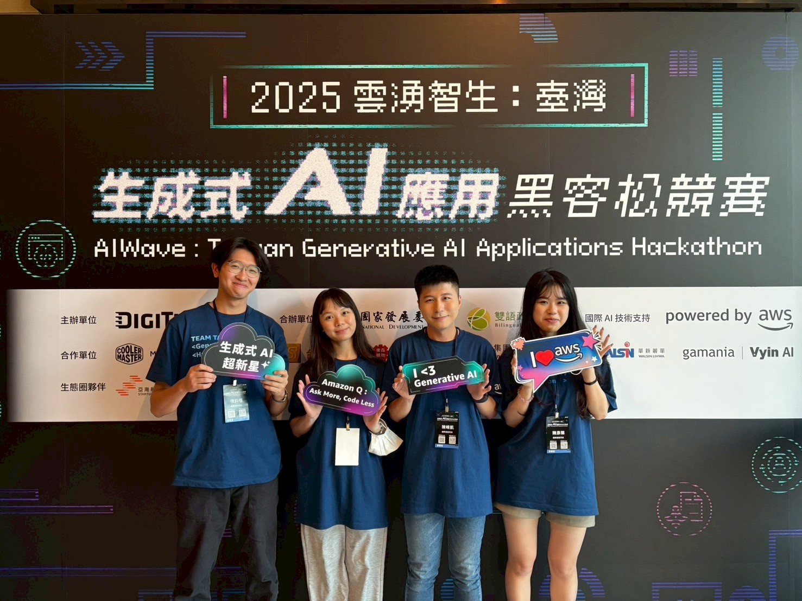

Stainless Steel International Standards AI Assistant System
An AWS-based intelligent system designed to assist technical personnel at Walsin Lihwa Corporation with questions related to international standards for stainless steel.
Team

Sheng-Kai Chen
Team Leader & Project Assembler (AWS & Frontend)
Yi-Ling Tsai
Frontend Design (Chatbot Webpage)
Chun-Chih Chang
Frontend Design (Chatbot Webpage)
Yan-Chen Chen
Presenter
Abstract
The Stainless Steel International Standards AI Assistant System is a cutting-edge, AWS-based intelligent platform developed for Walsin Lihwa Corporation. The system is designed to assist technical personnel with queries related to international standards for stainless steel, offering solutions in the areas of standard comparisons, professional queries, and document analysis. By leveraging advanced AI technologies, the system adapts responses to match the user’s level of expertiseâ€â€beginner, intermediate, or expertâ€â€ensuring an optimal user experience. Key features of the system include: Professional Standard Queries: Effortlessly search for detailed information on steel grades, compositions, mechanical properties, and application scopes across multiple international standards such as ASTM, JIS, and EN. Multi-Standard Comparisons: Automatically compare various international standards, highlighting key differences and correspondences. Document Analysis: Capable of analyzing a wide range of document formats, including PDFs, Excel spreadsheets, and images. Expertise Adaptation: Tailors responses based on the user's proficiency level, adjusting the complexity and technicality of the answers provided. Built on the AWS cloud, the system incorporates several AWS services, such as AWS Lambda, Amazon API Gateway, Amazon Kendra, Amazon Textract, and Amazon Rekognition, for efficient processing, content retrieval, and analysis. The AI assistant employs Amazon Bedrock's Claude language model to generate intelligent, expertise-adapted responses. The system also includes an intuitive web interface and can be deployed using AWS services like S3, CloudFront, and DynamoDB. Future plans for the project include expanding the knowledge base, implementing multi-language support, and further enhancing document recognition capabilities.